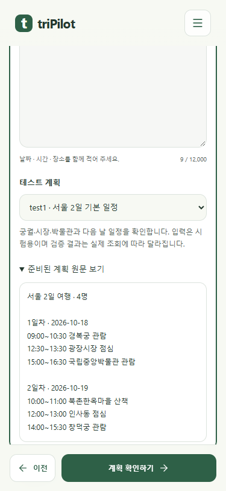

test1로 준비된 계획 확인하기
계획 입력란에 test1~test12를 적거나 목록에서 고릅니다. 준비된 원문을 먼저 볼 수 있고, 제출하면 기존 일정 검증으로 연결합니다. 고정되는 것은 입력이며 검사 결과는 실제 조회에 따라 달라집니다.
Chrome 실제 촬영 · mock 서버 화면 반응 검사 21/21. 로컬 접수·검증 검사 62/62. 공개 cs 프로젝트 서버 응답·x600 서버 배포는 확인하지 않았습니다.
375px 휴대폰
test1 직접 입력을 목록이 인식하고 원문을 펼친 화면입니다. 아래로 스크롤하면 원문 전체를 볼 수 있습니다.
